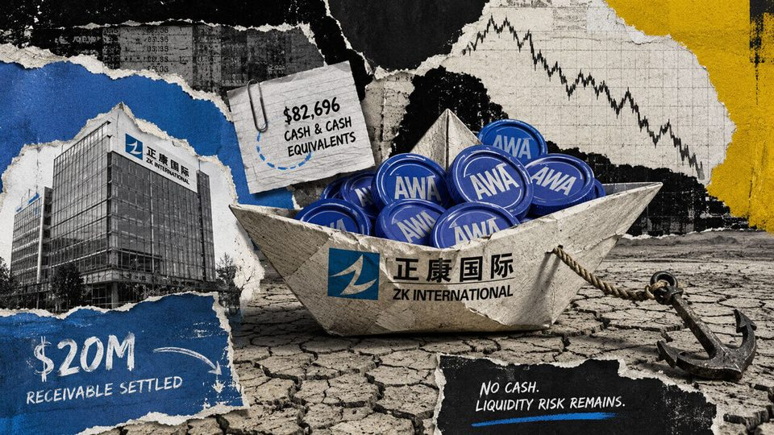
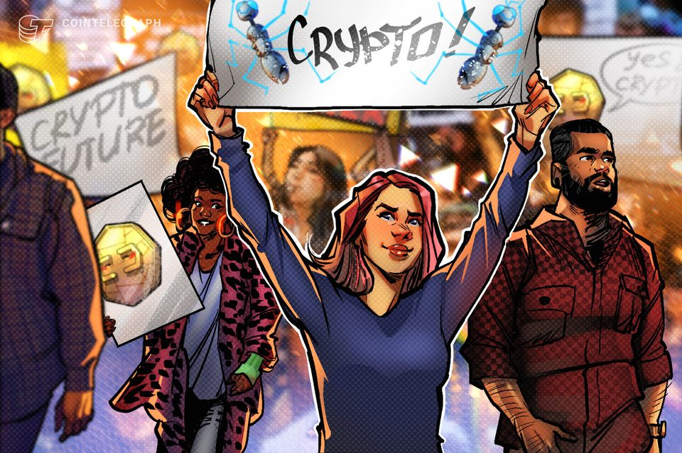
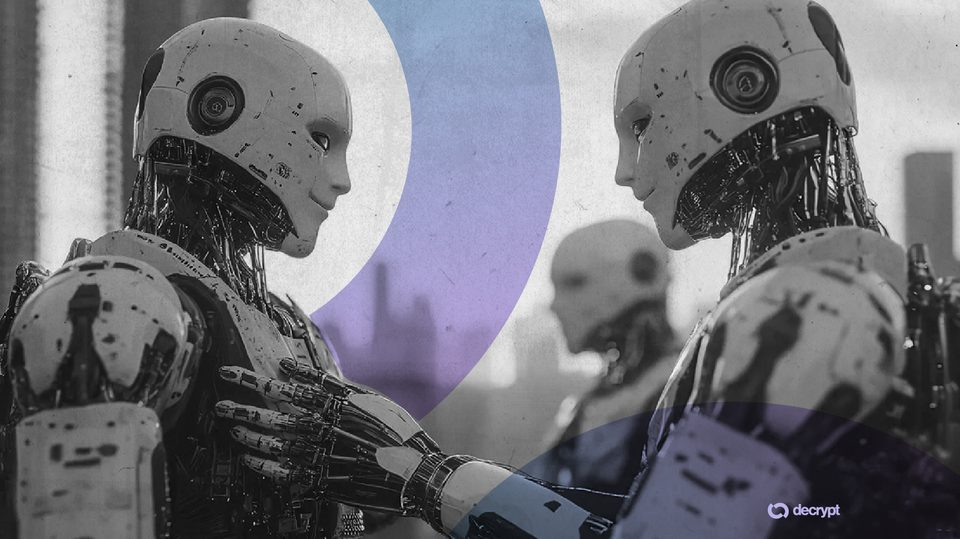
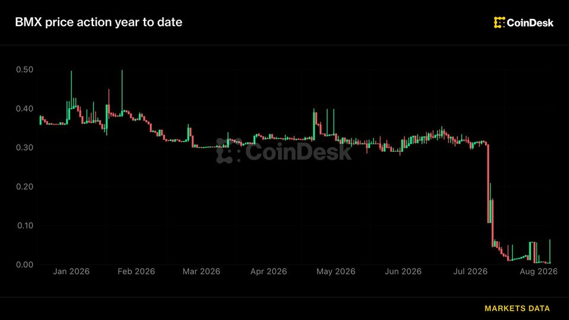
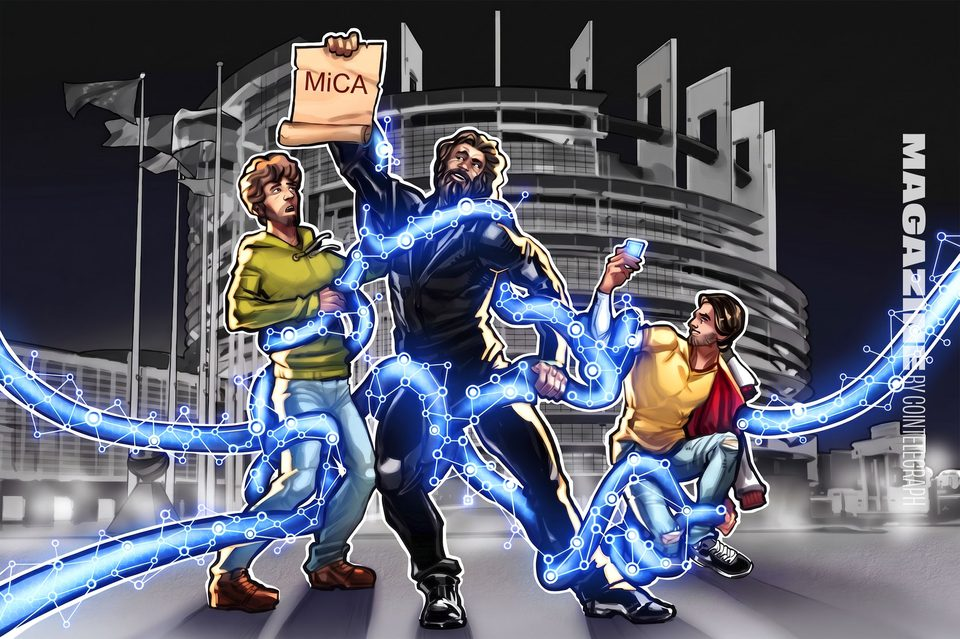
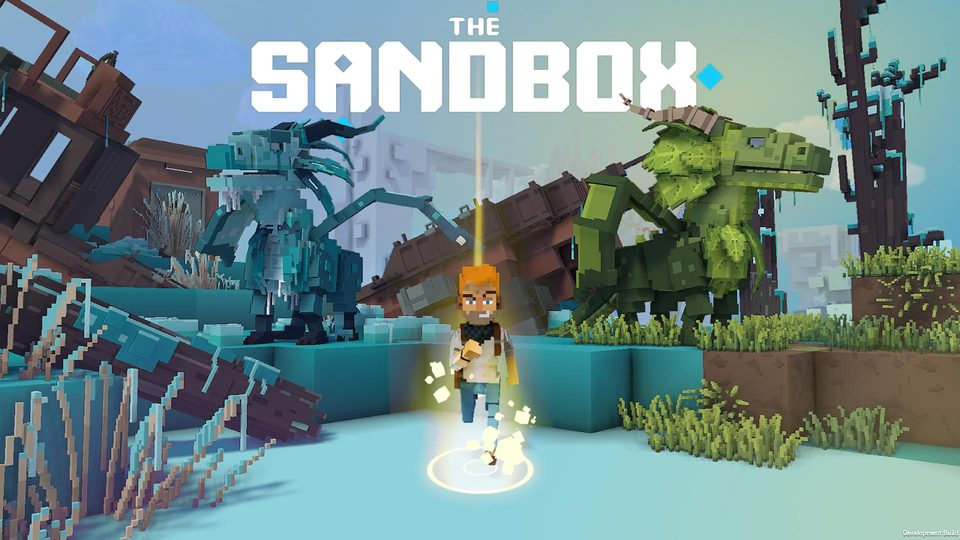
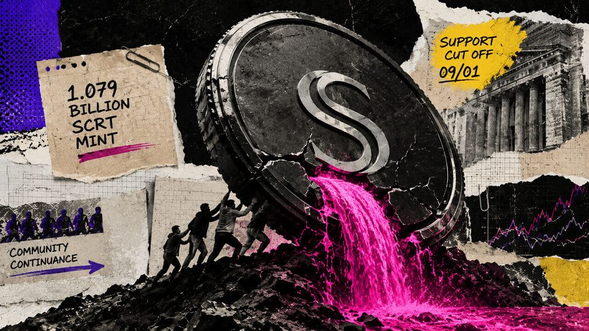
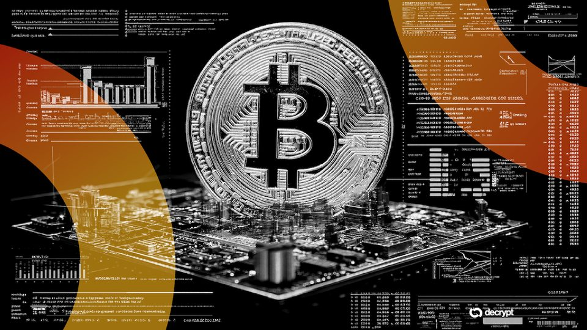

August 23, 2026
Daily headline set with source diversity, cleaned links, and local static rendering.

How a $20M crypto payout left a micro-cap firm with under $83K in usable cash reserves
The August 21 filing said 205,512.5 tokens remained unmonetized, with their receipt-date fair value still unresolved. The post How a $20M crypto payout left a micro-cap firm with under $83K in usable cash reserves...

Fed study finds crypto investors driven by beliefs, easily swayed by returns
A Federal Reserve Bank of Cleveland study finds crypto investors hold sharply different views on returns and risk, while information about Bitcoin’s past gains can increase both desired allocations and actual crypto...

Robot Brains Could Have Their ‘ChatGPT Moment' by 2027, ACE Robotics Chairman Says
The breakthrough could come from AI models that help robots understand and interact with the physical world, though widespread adoption may still be years away.

Crypto exchange BitMart weighs partial restart and creditor payouts weeks after announcing shutdown
Crypto exchange BitMart weighs partial restart and creditor payouts weeks after announcing shutdown
The US approved high-leverage Bitcoin trading while crypto founders remain legally blocked from raising funds
On May 29, the CFTC approved a Bitcoin perpetual contract for a regulated US exchange. Almost three months later, on Aug. 18, the SEC proposed a legal route through which crypto projects could someday raise money from...

MiCA is coming for DeFi vaults, but regulation will be difficult
Brussels is reviewing whether crypto lending should fall under MiCA, but DeFi lending vaults are making it harder to determine who, exactly, should be regulated.

Microsoft Fixes 'Perfect 10' Exploit That Could Have Let Hackers Run Code Remotely
The Entra ID flaw earned the highest possible severity score, but Microsoft says it patched the bug before publishing the CVE and found no evidence it was ever exploited.

Web3 gaming network Sandbox stops Base and BNB chain bridging after exploit
Web3 gaming network Sandbox stops Base and BNB chain bridging after exploit

Layer 1 network dilutes supply by 75% overnight to fund survival after main developer quits
The executed mint reduced the proposal’s pre-existing supply base to about 25.1% of its estimated post-mint total. The post Layer 1 network dilutes supply by 75% overnight to fund survival after main developer quits...

Here's what happened in crypto today
Need to know what happened in crypto today? Here is the latest news on daily trends and events impacting Bitcoin price, blockchain, DeFi, Web3 and crypto regulation.

AI Has Made Bitcoin Software a Target—This Group Is Fighting Back
A group of 20-odd developers is scanning the Bitcoin ecosystem for AI-discoverable flaws, warning that cheap, powerful models have handed attackers unprecedented reach.
Tokenized stocks risk repeating Wall Street's 1960s ‘paper crisis,' Fairmint CEO says
Tokenized stocks risk repeating Wall Street's 1960s ‘paper crisis,' Fairmint CEO says